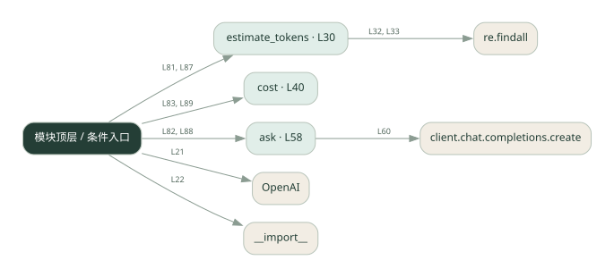

1-12 · 全课程第 12 节
Token 与费用估算
012.py
源码快照 297d2edb4856 · 静态解析 · 2026-09-10
01 / 要完成的事
按输入和输出用量分别计算费用，并与估算比较。
02 / 为什么要做
只看调用次数无法解释成本：每次输入输出长度都不同。
03 / 当前代码状态
存在外部服务或模型依赖；执行前需按源文件配置依赖和凭据，可能联网或产生 API 费用。 本次只做静态解析，没有运行练习，也没有替你填写或修改原代码。
04 / 调用图
打开大图 ↗实线：源码中的直接调用；虚线：函数引用/注册、动态调用或按方法名推断的候选。L 是调用所在源码行号。箭头不表示执行顺序或每次必经；分支、循环、异步调度及框架内部调用需结合源码。灰色是外部/未解析目标，橙色是动态分发；省略 print、len 和常规容器操作以减少干扰。孤立函数可能尚未接入。

先从 模块入口 出发，沿箭头找到本文件函数，再查看外部调用或动态分发。右侧调用清单保留所有静态调用点，能回到原文件逐行对照。
05 / 函数定位
| 函数 / 定义行 | 职责（源码注释） | 内部调用 |
|---|---|---|
estimate_tokensL30 | 本地近似估算 token：中文 1 字≈1 token，英文按词估 | len, re.findall, int |
costL40 | 算一次调用的成本（元） | 未发现显式函数调用（可能直接计算、读写状态或尚未实现） |
askL58 | 调一次 LLM，返回 (答案, prompt_tokens, completion_tokens) | client.chat.completions.create |
这样做的优点
费用公式透明，便于比较提示词和回答长度。
代价与局限
源码单价是示例配置，不代表当前价格；估算应与供应商实际 usage 对照。
适用场景
预算教学、不同方案的成本比较。
不宜直接照搬
直接用字符估算作为正式账单。
动手检验理解
把历史长度加倍，比较输入费用如何变化。
有未实现位置时先预测，再补齐验证。能启动不等于逻辑正确。
查看全部 28 个静态调用 / 引用点
| 调用方 | 目标 | 源码行 | 类型 |
|---|---|---|---|
| <模块入口> | OpenAI | 21 | 调用 |
| <模块入口> | __import__ | 22 | 调用 |
| estimate_tokens | len | 32 | 调用 |
| estimate_tokens | re.findall | 32 | 调用 |
| estimate_tokens | len | 33 | 调用 |
| estimate_tokens | re.findall | 33 | 调用 |
| estimate_tokens | int | 37 | 调用 |
| ask | client.chat.completions.create | 60 | 调用 |
| <模块入口> | print | 77 | 调用 |
| <模块入口> | print | 78 | 调用 |
| <模块入口> | print | 79 | 调用 |
| <模块入口> | print | 81 | 调用 |
| <模块入口> | estimate_tokens | 81 | 调用 |
| <模块入口> | ask | 82 | 调用 |
| <模块入口> | cost | 83 | 调用 |
| <模块入口> | print | 84 | 调用 |
| <模块入口> | print | 85 | 调用 |
| <模块入口> | print | 87 | 调用 |
| <模块入口> | estimate_tokens | 87 | 调用 |
| <模块入口> | ask | 88 | 调用 |
| <模块入口> | cost | 89 | 调用 |
| <模块入口> | print | 90 | 调用 |
| <模块入口> | print | 91 | 调用 |
| <模块入口> | print | 93 | 调用 |
| <模块入口> | print | 94 | 调用 |
| <模块入口> | print | 95 | 调用 |
| <模块入口> | print | 96 | 调用 |
| <模块入口> | print | 97 | 调用 |